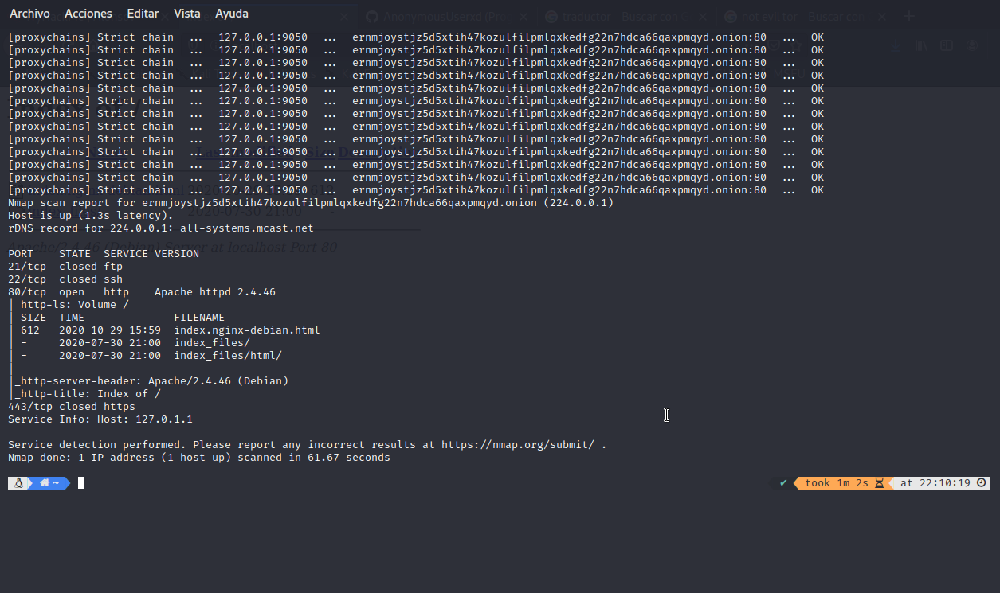

Scanning onion
Hace un tiempo estuve viendo formas de como escanear onions y ahora vengo a compartir esto,por motivos de seguridad y por no meterme en problemas hare esta demostracion en un sitio onion que creare yo,si solo ha venido a ver como escanear puede irse a la ultima parte espero que les sirva :D.
Bueno empezemos,primero vamos a instalar los paquetes que usaremos -apt install nmap -apt install proxychains4 -apt install tor -apt install curl (cabe recalcar que si estas en una distribucion como parrot,kali,backbox etc ya tendras estas herramientas instaladas) , luego de instalados los paquetes que usaremos sigamos con lo mas importante
Lo principal viene ahora con lo que haremos en el archivo de configuracion de tor (torrc) para encontrar este archivo navegaremos hasta el directorio /etc/tor y vamos a editar el archivo en mi caso lo hare con vim y agregaremos las siguientes dos lienas ControlPort 9051 CookieAuthentication 1
Vale ahora en el torrc descomentaremos dos lienas del apartado de la seccion de servicios ocultos esto es lo que hara que nuestro servicio onion se cree
Ahora iniciaremos el servicio apache con el comando service apache2 start esto hara que se inicie en segundo plano recuerden hacerlo con permisos de superusuario,luego abriremos otra terminal y pondremos el comando tor si bien podriamos solo hacer un service tor start esto podria generar fallas al estar corriendo tor en segundo plano
Ahora despues de aver iniciado el servicio apache y tor nos iremos al directorio en donde se guardo toda la informacion incluyendo la url de nuestra direccion onion, la ruta por defecto es /var/lib/tor/hidden_service
Luego de esto haremos un curl a la direccion onion para asegurarnos que este funcionando y no haya algun problema
Listo!, ahora solo colocaremos el comando usando proxychains4 obviamente ustedes pueden hacer un nmap sin mas pero yo en mi caso agregare algunos argumentos extras proxychains4 -f /etc/proxychains.conf nmap -sC -sV -p 21,22,80,443 (url.onion):

Como pueden ver tenemos el resultado y nos dio la version que corre en el servicio apache asi como la lista del index.
Pues eso fue todo espero que le haya servido al que estaba en este problema :)